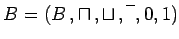
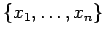
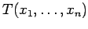
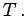
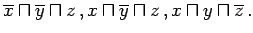
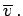
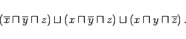
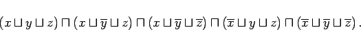

Inhalt Index DeskTop Bronstein

 Algebra und Diskrete Mathematik Boolesche Algebren und Schaltalgebra Normalformen
Algebra und Diskrete Mathematik Boolesche Algebren und Schaltalgebra Normalformen


Es sei  eine BOOLEsche Algebra und  eine Menge BOOLEscher Variabler. Jede Konjunktion bzw. Disjunktion, in der jede Variable oder ihre Negation genau einmal vorkommt, heißt Elementarkonjunktion bzw. Elementardisjunktion (in den Variablen  ).
).
Es sei  ein BOOLEscher Ausdruck. Eine Disjunktion D von Elementarkonjunktionen mit D=T heißt kanonisch disjunktive Normalform (KDNF) von  Eine Konjunktion K von Elementardisjunktionen mit K=T heißt kanonisch konjunktive Normalform (KKNF) von
Um zu zeigen, daß sich jede BOOLEsche Funktion f durch einen BOOLEschen Ausdruck darstellen läßt, wird zu der in der folgenden Tabelle gegebenen Funktion f die KDNF konstruiert:
| x | y | z | f(x,y,z) |
| 0 | 0 | 0 | 0 |
| 0 | 0 | 1 | 1 |
| 0 | 1 | 0 | 0 |
| 0 | 1 | 1 | 0 |
| 1 | 0 | 0 | 0 |
| 1 | 0 | 1 | 1 |
| 1 | 1 | 0 | 1 |
| 1 | 1 | 1 | 0 |
Die KDNF zur BOOLEschen Funktion f besteht aus den Elementarkonjunktionen  Diese Elementarkonjunktionen gehören zu den Belegungen b der Variablen, die bei f den Funktionswert 1 haben. Ist in b eine Variable v mit 1 belegt, so wird v in die Elementardisjunktion aufgenommen, andernfalls  Für das obige Beispiel lautet die KDNF:
|  | (5.336) |
Die ,,duale`` Form zur KDNF ist die KKNF: Die Elementardisjunktionen gehören zu den Belegungen b der Variablen, die bei f den Funktionswert 0 haben. Ist in b eine Variable v mit 0 belegt, so wird v in die Elementardisjunktion aufgenommen, andernfalls Somit lautet die KKNF für das obige Beispiel:
|  | (5.337) |
Die KDNF und die KKNF zu f sind eindeutig bestimmt, wenn man eine Reihenfolge der Variablen und eine Reihenfolge der Belegungen vorgibt, z.B. wenn man die Belegungen als Dualzahlen auffaßt und der Größe nach ordnet.